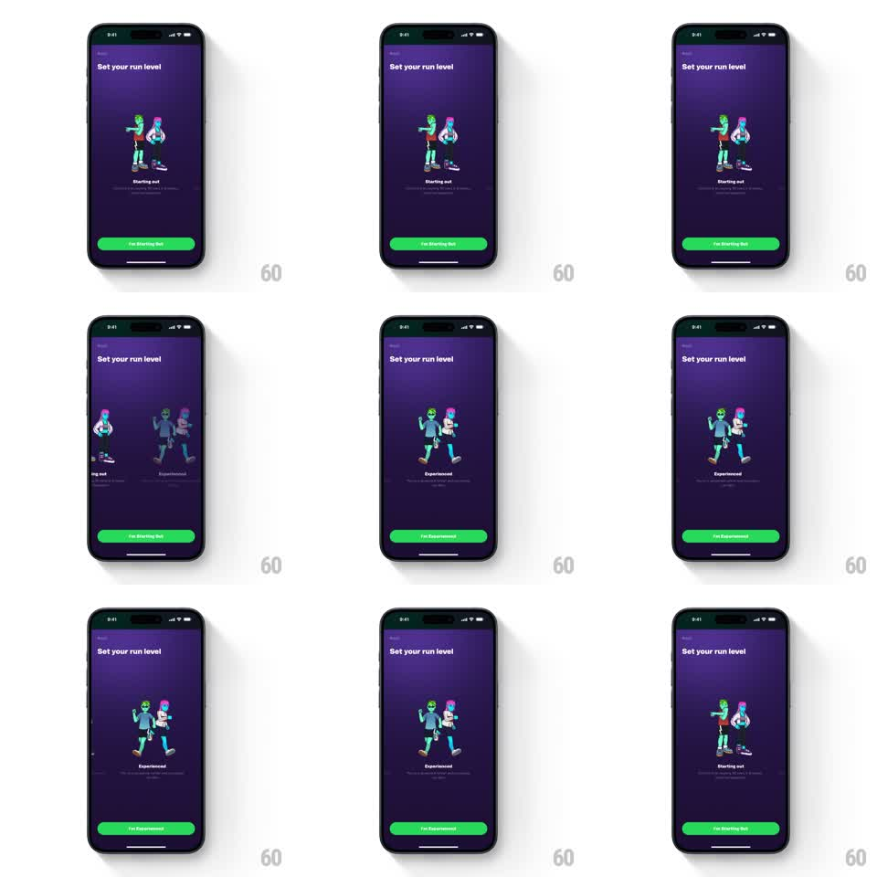

Media
Frame-by-frame

Rebuild this interaction 1:1: Supersonic's run-level picker - horizontal swiping between level cards ("Starting out", "Experienced") with animated 3D runner characters, while the green CTA relabels to match the focused level.

Rebuild this interaction 1:1: Supersonic's run-level picker - horizontal swiping between level cards ("Starting out", "Experienced") with animated 3D runner characters, while the green CTA relabels to match the focused level.
## Integration
Integration: stack-agnostic spec - springs given as stiffness/damping, timed motions as duration + curve; map every value to your framework and animation library of choice.
## Scene
Deep purple screen, "Set your run level" title. Center stage: a card with two stylized 3D runner characters (bright sneakers, neon accents) in mid-stride poses, a level label below ("Starting out" / "Experienced") with a short descriptor. Bottom: a full-width green pill CTA that reads "I'm Starting Out" or "I'm Experienced".
## Motion spec
Pattern: horizontal card paging with character animation and a live CTA.
- Swipe horizontally: the current card slides out as the next slides in 1:1 with the finger; release snaps to the nearest card (spring stiffness ~350, damping ~28).
- Incoming characters enter with personality: they jog in place (run-cycle loop, ~600ms per stride) and the pair bobs with soft offset phases.
- The focused card's characters are full color and scale 1.0; the off-screen card peeks at ~0.9 scale and 60% opacity.
- The CTA label crossfades to the focused level's name mid-swipe (at the 50% point, 200ms) - it always names the level you'd get by tapping now.
- Level label and descriptor fade up per card (200ms) on settle.
## Calibration
- The CTA is a live preview of selection - it must never lag a settled card.
- Character run cycles loop seamlessly; a hitching stride reads as a bug.
## Reduced motion
Cards crossfade; characters hold a static pose.
## Don't miss
- Two characters per card, interacting (one mid-leap, one pacing) - a lone figure loses the social energy.
- The green CTA is the only green element; it anchors the bottom against the purple field.